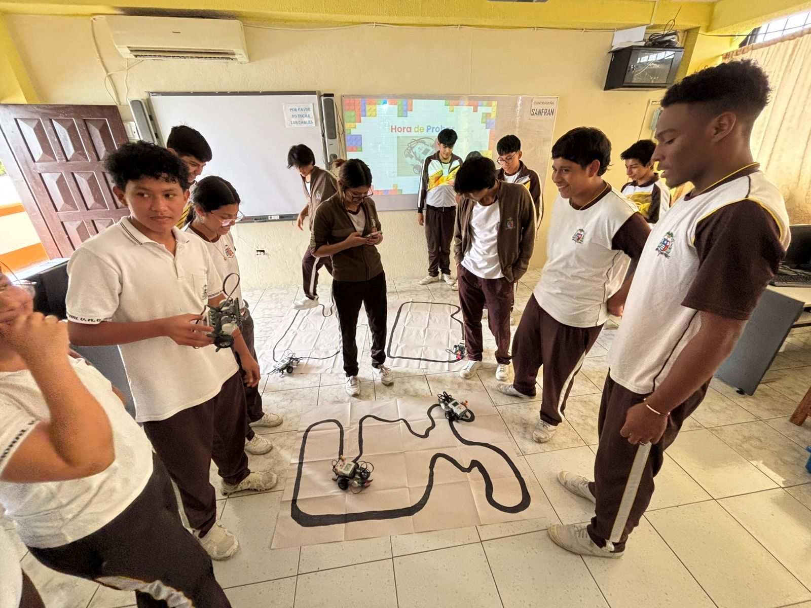
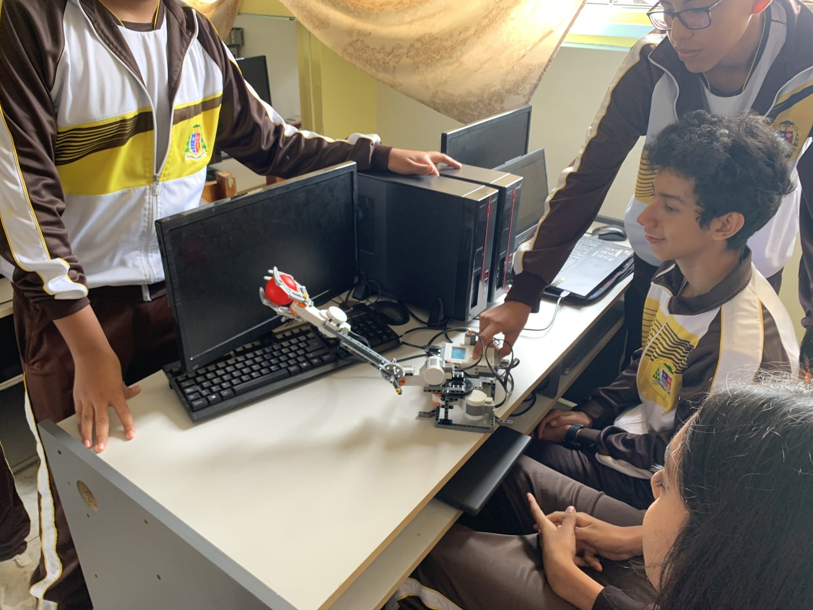
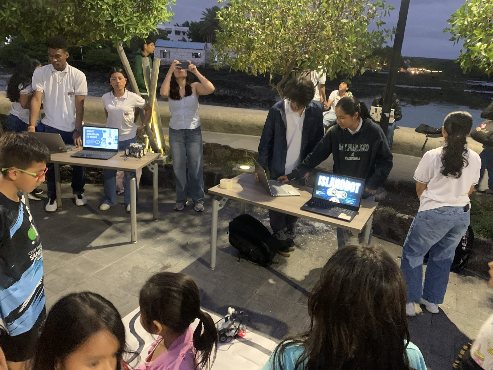
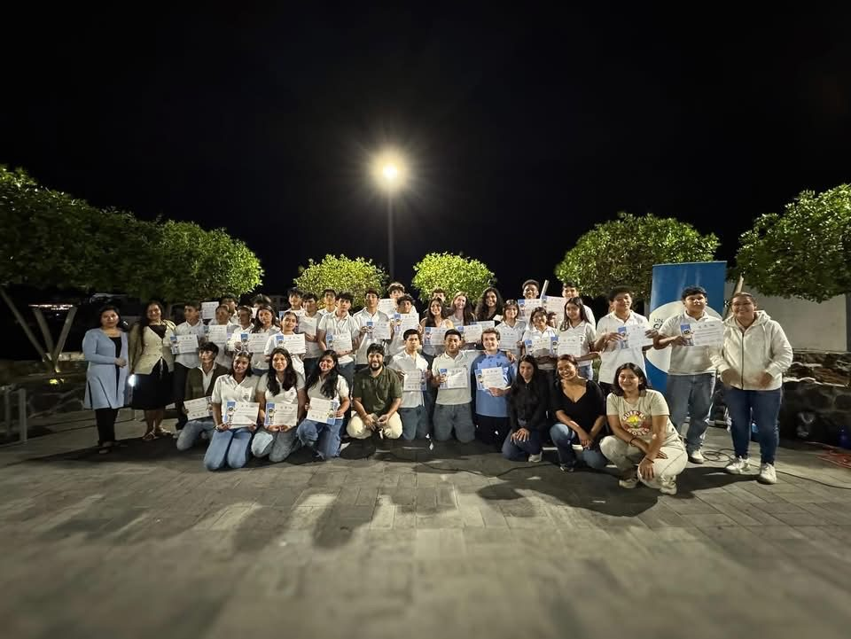

I volunteered with Fundación Un Cambio por la Vida on Santa Cruz Island in the Galápagos, Ecuador, as part of Villanova Engineering Service Learning. The goal was to bring hands-on robotics education to local high school students who did not have adequate access to STEM education. Using LEGO Mindstorms kits, we taught fundamental programming and electromechanical systems concepts through a five-day robotics course.
Before traveling, the team and I developed and updated the workshop materials, including slide shows with step-by-step instructions for assembling and programming each robot. We also organized six complete LEGO Mindstorms kits to bring with us and donate to the high school for future educational use.
On Santa Cruz, we ran two classes each day for five days, one for younger students and one for older students, with both groups working through the same projects at different times of day. A fluent Spanish speaker from ESPOL led the main instruction, going over the slides and explaining each topic in depth, while the rest of the team, myself included, walked around the classroom helping students with any difficulty building or programming their robots. Over the week, students built a line-following robot using a color sensor, a robotic arm with three axes of control, and an ultrasonic radar system. At the end of the week, they used those skills to create their own group robots aimed at helping solve local problems in the Galápagos, and presented their projects to the local community in the town center. I also co-organized and hosted the robotics showcase for 250+ attendees, increasing local receptivity to STEM education.
The syllabus, which was sent to students taking the course and used by us as instructors, outlines the five-day schedule: an introduction to LEGO Mindstorms, block programming, and sensors on day one, followed by the line follower, robot arm, and radar projects, and group project time on the final day. The course book is the robotics STEM lab book we compiled for the students, with photo-by-photo build instructions and the related block-code instructions for the LEGO Mindstorms NXT projects (the robot arm and line follower, among others). All of these labs were found publicly on the LEGO NXT projects site; our contribution was compiling and organizing them into a single PDF of instructions.
Introductory Robotics Syllabus.

Figure 1: The class playing with their line-following robots.

Figure 2: The class playing with their robotic arm.

Figure 3: Students demonstrating their robots to the local community.

Figure 4: Team with the students at the course graduation ceremony.
I had taught robotics workshops very similar to this one in my hometown, but never in a foreign country, and my main concern going in was whether a language barrier would keep me from being effective. In the field the barrier was much smaller than I expected: I am not fluent in Spanish, but I could communicate, and I could see students understand concepts as I explained them in my broken Spanish. It showed me that education is universal. The most meaningful moment of the week was the community show-and-tell, where the students became leaders and found the courage to teach their peers about STEM and how it can be used to improve their community. I hope the work inspired some of them to pursue STEM in the future.